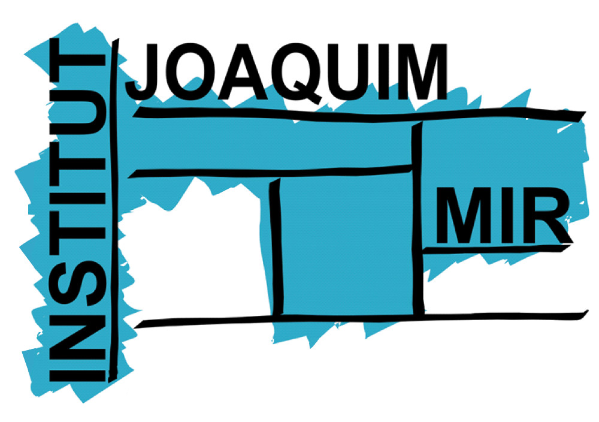

Horari 
| Hora | Dilluns | Dimarts | Dimecres | Dijous | Divendres |
|---|---|---|---|---|---|
| 15:00 - 16:00 | Sistemes Operatius | Sistemes Operatius | Base de Dades | ||
| 16:00 - 17:00 | Base de Dades | ||||
| 17:00 - 18:00 | Base de Dades | Sistemes Operatius | Llenguatge de Marques | Programació | |
| 18:00 - 18:20 | Pati | ||||
| 18:20 - 19:20 | Llenguatge de Marques | Àngles | Programació | Programació | Programació |
| 19:20 - 20:20 | |||||
| 20:20 - 21:20 | Tutoria | ||||
Llista de Mòduls
-
Programació
Professora: Sandra Vicente
Accedeix al Moodle de Programació -
Base de Dades
Professor: Dani López
Accedeix al Moodle de Base de Dades -
Llenguatge de Marques
Professor: Salva Jimenez
Accedeix al Moodle de Llenguatge de Marques -
Sistemes Operatius
Professora: Yolanda Salcedo
Accedeix al Moodle de Sistemes Operatius -
Àngles
Professora: Pilar Herrero
Accedeix al Moodle de Àngles -
Tutoria
Professora: Yolanda Salcedo
Accedeix al Moodle de Tutoria